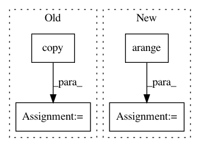

a68ba97309512f691feb25e6a07af7561fc56e3b,sklearn/inspection/_permutation_importance.py,,_calculate_permutation_scores,#Any#Any#Any#Any#Any#Any#Any#,28
Before Change
n_repeats, scorer):
Calculate score when `col_idx` is permuted.
original_feature = _safe_column_indexing(X, col_idx).copy()
temp = original_feature.copy()
scores = np.zeros(n_repeats)
for n_round in range(n_repeats):
random_state.shuffle(temp)
After Change
// writable data-structure whose columns can be shuffled inplace.
X_permuted = X.copy()
scores = np.zeros(n_repeats)
shuffling_idx = np.arange(X.shape[0])
for n_round in range(n_repeats):
random_state.shuffle(shuffling_idx)
if hasattr(X_permuted, "iloc"):
col = X_permuted.iloc[shuffling_idx, col_idx]
col.index = X_permuted.index
X_permuted.iloc[:, col_idx] = col
else:
X_permuted[:, col_idx] = X_permuted[shuffling_idx, col_idx]
In pattern: SUPERPATTERN
Frequency: 4
Non-data size: 4
Instances
Project Name: scikit-learn/scikit-learn
Commit Name: a68ba97309512f691feb25e6a07af7561fc56e3b
Time: 2019-12-20
Author: g.lemaitre58@gmail.com
File Name: sklearn/inspection/_permutation_importance.py
Class Name:
Method Name: _calculate_permutation_scores
Project Name: WZBSocialScienceCenter/tmtoolkit
Commit Name: 9def69a805132ff7549744b5b30a2fa7531fa405
Time: 2019-06-12
Author: markus.konrad@wzb.eu
File Name: tmtoolkit/preprocess/_tmpreproc.py
Class Name: TMPreproc
Method Name: tokens_dataframe
Project Name: KrishnaswamyLab/PHATE
Commit Name: 55b6fb811938351d42929228ccbb0281183d8cf6
Time: 2018-04-06
Author: scottgigante@gmail.com
File Name: Python/phate/phate.py
Class Name: PHATE
Method Name: von_neumann_entropy
Project Name: dhlab-epfl/dhSegment
Commit Name: 4c396eb38f8696d8869219dc8c20d19a374cbacc
Time: 2018-02-13
Author: seg.benoit@gmail.com
File Name: doc_seg/evaluation/cbad.py
Class Name:
Method Name: cbad_evaluate_folder